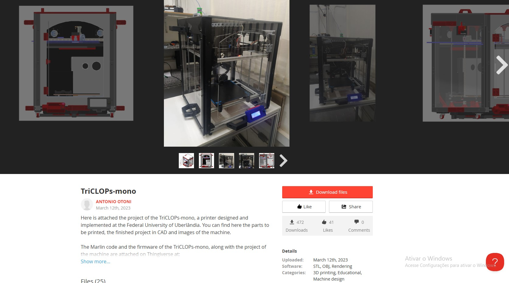
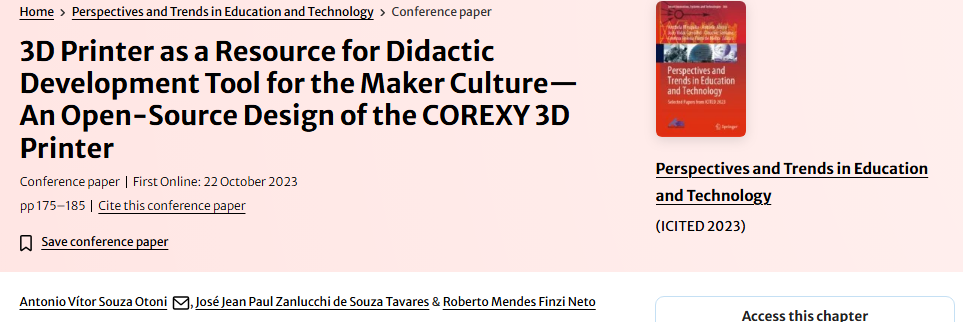
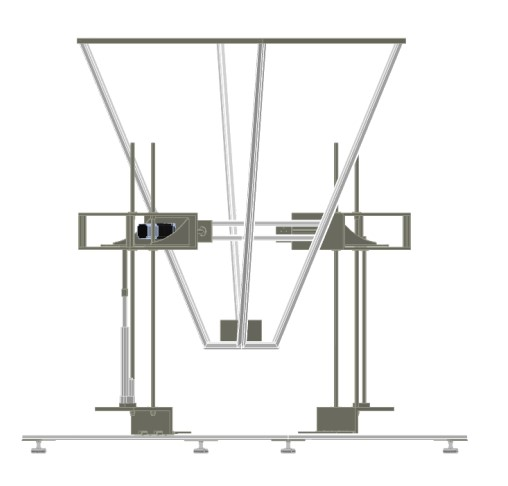
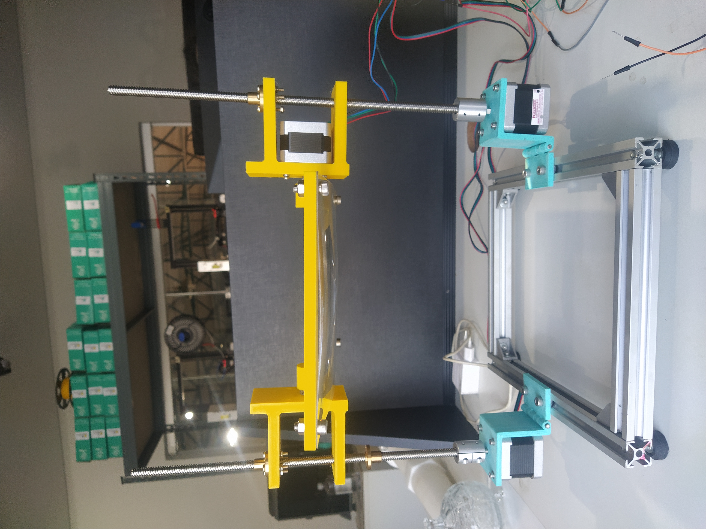
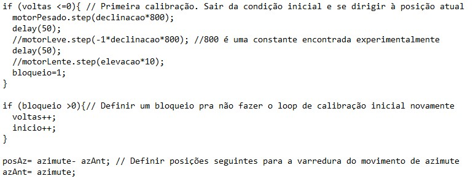
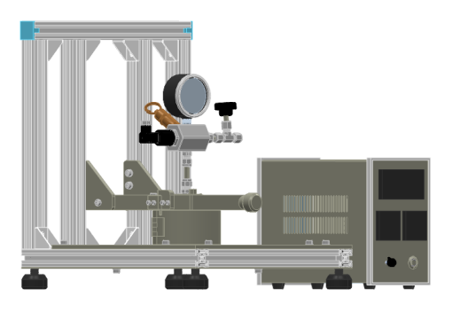
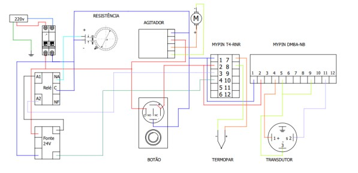
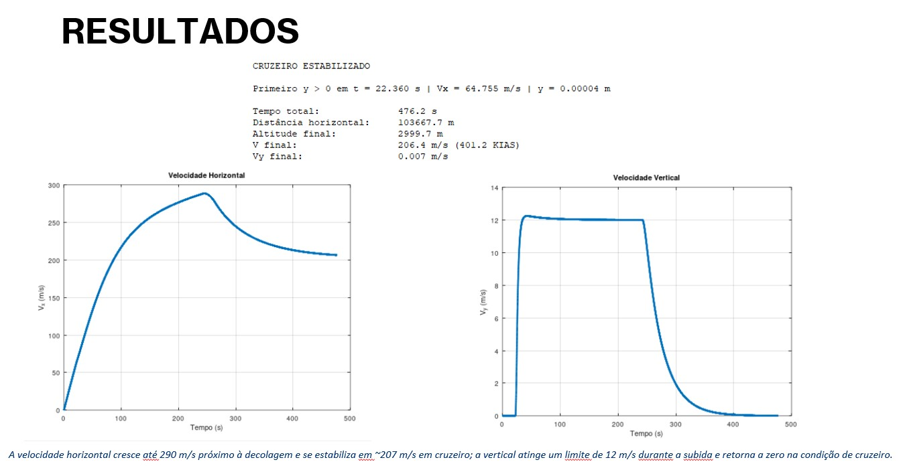

Impressora 3D COREXY
Projeto e desenvolvimento de uma impressora 3D

Da modelagem à máquina
Desenvolvemos do zero uma impressora 3D. A ideação com pesquisas no mercado, desenho da estrutura em CAD, desenvolvimento do firmware e parte eletrônica supervisada. Além disso, a montagem dessa e mais 3 outras impressoras que hoje estão disponibilizadas para a FEMEC da UFU.
Arquivos e demonstração
Apresento também o link do open-source da impressora 3D, publicado no grabcad e no thingiverse. Conta com as peças que foram impressas para produção das máquinas, o firmware e demais peças em 3D. Também, um vídeo de manual de uso desenvolvido para o laboratório.

Concentrador solar de lente de Fresnel
Estrutura mecânica e sistema de posicionamento solar que contava com uma lente de Fresnel que aumentava a temperatura de um material para experimentos físico-químicos.

Como posicionar uma lente de Fresnel ao longo do movimento do Sol?
Utilizamos a modelagem matemática de projeção do sol, com cálculo da posição atualizada a cada minuto. Com isso, foi feito um controle de movimentação da estrutura que visava a melhor reflexão pontual do sol.

Desenvolvimento mecânico
Modelagem da estrutura, desenvolvimento do mecanismo de movimentação e integração com o sistema de posicionamento solar.
Parte importante do código

Reator de bancada automatizado
Controle de temperatura, pressão, dosagem e agitação

Diferenças para o outro projeto de reator
Esse foi um projeto mecânico/elétrico. Não havia controladores eletrônicos, tudo era feito através de relés e botões, que controlavam a temperatura e o agitador magnético.
Projeto elétrico
Desenvolvimento do projeto elétrico e da montagem, leitura de sensores, acionamento dos atuadores, interface e organização da execução das receitas.
Esquema de montagem elétrica

Simulador de desempenho de voo
Modelagem matemática e integração numérica

Representar o desempenho de uma aeronave por meio de um modelo computacional
Foi desenvolvido um modelo matemático simplificado para representar a dinâmica longitudinal de uma aeronave executiva durante a decolagem, com base no Teorema de Transporte de Reynolds. Foi um trabalho apresentado para a disciplina de Mecânica dos Fluidos e depois aprimorado no curso de Propulsão de Aeronaves. Contém matemática analítica, contínua e computacional e, pelas informações da aeronave (nesse caso o Phenom 100), a informação de quanto tempo demoraria para chegar à condição de cruzeiro com um consumo de combustível especificado.
Do modelo às simulações
Formulação e implementação das equações de movimento linear, integração numérica, representação das fases do voo e análise dos resultados.
Contribuições
Modelo reproduziu qualitativamente a dinâmica longitudinal do Phenom 100 nas fases de solo, subida e cruzeiro.
Transições automáticas e suaves entre fases de voo, sem descontinuidades.
Equilíbrio esperado entre sustentação/peso e empuxo/arrasto confirmado em cruzeiro.